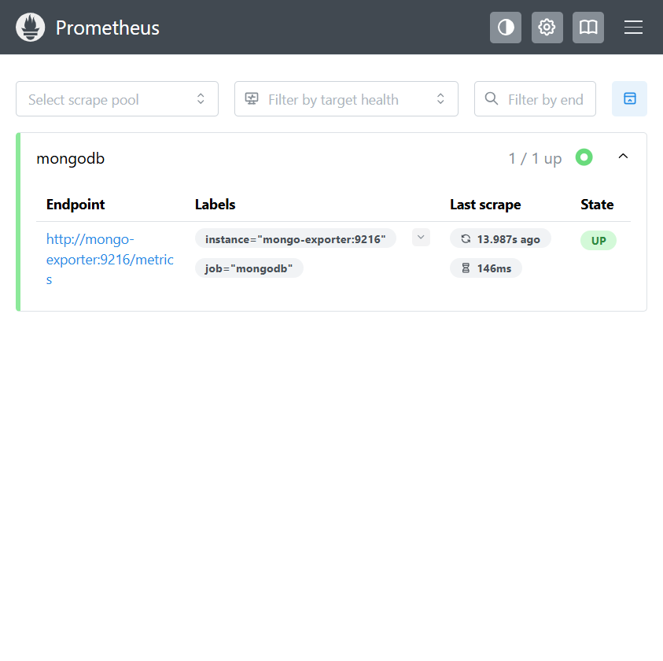
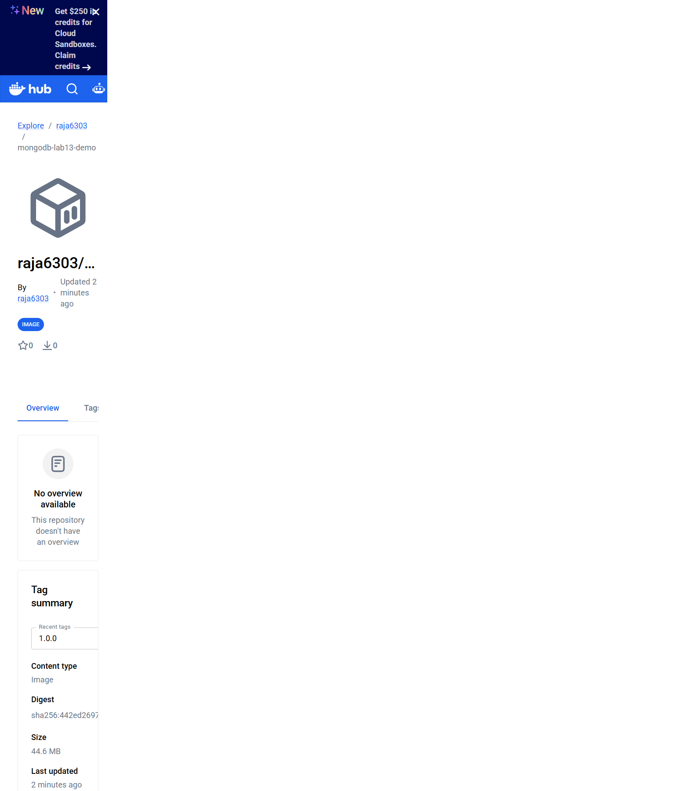

Chapter 13 · MongoDB Deployment
Name: G.RAJA SIMHA REDDY
USN: 24BTRCL070
Docker Hub URL: https://hub.docker.com/r/raja6303/mongodb-lab13-demo
Docker Compose replica set: three MongoDB nodes healthy; PyMongo insert/read passed; controlled election changed primary from mongo1 to mongo2 and the follow-up read/write passed.
Monitoring: Prometheus target was healthy and mongodb_up=1. Docker Hub: image tag 1.0.0 was pushed with approval and verified in the public repository.


terraform validate passed; no plan or apply was run. After explicit approval, the demo image was pushed to Docker Hub; Docker reported success and the remote 1.0.0 manifest was verified. No Atlas resources were created.| Deliverable | Result | Evidence/qualification |
|---|---|---|
| Docker Compose: three MongoDB nodes, keyfile, persistent volumes | PASS | All three nodes report healthy; distinct named data volumes and keyfile volume used. Loopback ports 37017–37019 avoid the existing host mongod on 27017. |
| Replica set election, members, PyMongo read/write, controlled failover | PASS | One primary and two secondaries observed; insert/read succeeded. Controlled stepdown elected mongo2 after mongo1; post-election write/read succeeded. |
| Prometheus and MongoDB exporter | PASS | Exporter reported mongodb_up=1; Prometheus target health was up and the live query returned 1. |
| Kubernetes StatefulSet and recovery | SCHEMA PASS; NOT DEPLOYED | All three manifests pass strict static validation. kubectl has no configured context, so rollout and pod recovery remain untested. |
| MongoDB Atlas M0 | VALIDATED; NOT APPLIED | Terraform init, format, and validate pass. No credentials or cloud resources supplied; no plan/apply run. |
| Demo image and Docker Hub submission | PUSHED; VERIFIED | raja6303/mongodb-lab13-demo:1.0.0 pushed successfully after approval; public repository and tag confirmed by Docker Hub API. Linux image digest: sha256:3af3c7ba516f6fc80ce27cf20aa859f09623c621dc71fc6e379fa660e8306d02. Push index digest: sha256:442ed269798d4e1bed826afdfc0821e152a14a75f2a3371b8fda954ea69cb867. Docker Hub repository. |
| Real execution screenshots | CAPTURED | Genuine Prometheus target-health and public Docker Hub repository screenshots captured. A PowerShell terminal screenshot was not available from this automation surface. |
This machine had Docker CLI 29.8.2, Docker Desktop, kubectl 1.36.1, and Terraform 1.9.8 in a temporary container for non-provisioning validation. The MongoDB port 27017 was occupied by an existing host mongod process, which was left untouched; this lab therefore uses its own loopback ports 37017–37019. No Kubernetes context exists.
lab13.1-docker/docker-compose.yml defines three mongo:7.0 members (mongo1–mongo3), replica-set name rs0, dedicated named data volumes, container health checks, and a one-shot replica-set initializer. Each published MongoDB port binds only to localhost. Compose dependencies ensure that the keyfile volume is prepared before any MongoDB node starts and that the initializer waits for healthy nodes.
| Node | Container port | Host loopback port | Persistent volume |
|---|---|---|---|
| mongo1 | 27017 | 37017 | mongo1-data |
| mongo2 | 27017 | 37018 | mongo2-data |
| mongo3 | 27017 | 37019 | mongo3-data |
Initialize-Lab.ps1 uses the operating-system cryptographic random-number generator to create a 756-byte MongoDB internal keyfile and a random 256-bit root password locally. Credentials are excluded from Git. The Alpine setup container stages the key into a named Docker volume, changes its owner to MongoDB UID 999 and sets mode 0400. This avoids relying on Windows bind-mount POSIX permissions. MongoDB nodes use --auth and --keyFile; the key secures member-to-member authentication.
MongoDB's initial root user is configured by the image environment on each new data volume. For monitoring, the initializer creates a separate exporter account with clusterMonitor and read-only admin roles. Generated credentials use URI-safe hex characters. These local lab credentials are not production secrets.
The initialization container connects to mongo1, idempotently calls replSetInitiate with all three Compose DNS names, and waits for exactly one primary and two secondaries. Election may choose any eligible member as primary. The three persistent volumes allow data to survive container recreation; `docker compose down -v` is deliberately not part of the testing scripts.
The custom Python 3.12 image installs pinned PyMongo 4.13.2 and contains a client that exposes status, write-read, and failover actions. It uses a replica-set-aware seed list, authentication against admin, a bounded server-selection timeout, and retryable writes. The write/read action replaces and reads a deterministic example document.
docker compose up -d mongo1 mongo2 mongo3 docker compose --profile init run --rm replica-set-init docker compose run --rm client status docker compose run --rm client write-read
Observed result: PASS. Docker reported all three MongoDB nodes healthy. PyMongo reported mongo1:27017 PRIMARY, mongo2:27017 SECONDARY, and mongo3:27017 SECONDARY. The deterministic example document was inserted and read back with its expected message.
Run docker compose run --rm client failover. The client records the existing primary with hello, sends a forced replSetStepDown to that node, tolerates the expected connection interruption, waits for a different primary, then verifies a document write/read through the replica-set-aware driver. A short write interruption is expected while a new primary is elected; the operation has a 120-second default timeout. The controlled stepdown does not remove a member or erase its volume.
Observed result: PASS. The controlled stepdown changed the primary from mongo1:27017 to mongo2:27017; the client then completed another write/read. All three member containers remained healthy.
The optional Compose monitoring profile adds a MongoDB exporter authenticated by its separate read-only monitoring user and a Prometheus server that scrapes it every 15 seconds. Only loopback addresses publish Prometheus (9090) and exporter (9216) ports.
docker compose --profile monitoring up -d # Prometheus UI: http://localhost:9090 # Exporter metrics: http://localhost:9216/metrics # Example Prometheus query: mongodb_up
Observed result: PASS. The first exporter run exposed its default direct-connect setting, which is invalid with a multi-host replica-set URI. After setting --no-mongodb.direct-connect, http://localhost:9216/metrics reported mongodb_up{cluster_role="mongod"} 1; Prometheus reported target health up and query result mongodb_up = 1. The live target view is reproduced in the genuine screenshot below.
mongo-headless-svc.yaml defines a headless Service. StatefulSet DNS names are mongo-0.mongo, mongo-1.mongo, and mongo-2.mongo in namespace mongo-lab. mongo-statefulset.yaml defines three MongoDB pods, three per-pod 5 GiB ReadWriteOnce PVCs, a source keyfile Secret, and an init container that stages the keyfile with UID 999 and mode 0400. Startup, readiness, and liveness probes use MongoDB's local ping command.
A separate MongoDB initialization Job configures rs0 with all three stable pod addresses and waits for the expected primary/secondary membership. The guarded PowerShell deployment script first checks for a configured Kubernetes context, then creates the namespace and Secrets without printing their contents, applies the Service and StatefulSet, and waits for the Job.
kubectl config get-contexts .\scripts\Deploy-Lab.ps1 kubectl rollout status statefulset/mongo -n mongo-lab --timeout=10m kubectl get pods,svc,pvc -n mongo-lab -o wide
A pod recovery demonstration deletes one pod while preserving its PVC. The StatefulSet should recreate the same ordinal, reattach its claim, and the MongoDB member should rejoin using its stable DNS identity:
kubectl delete pod mongo-1 -n mongo-lab kubectl wait --for=condition=Ready pod/mongo-1 -n mongo-lab --timeout=5m kubectl get pod mongo-1 -n mongo-lab -o wide # Confirm the rejoined member using authenticated rs.status().
Observed result: strict Kubernetes schema validation passed for all three manifests (3 valid, 0 invalid). Runtime deployment and pod-recovery testing were not possible because kubectl has no current context. No pod was created or deleted, and no recovery is claimed.
The Terraform configuration defines the Atlas provider, dedicated project, AWS Mumbai M0 replica set, scoped database user, and an Atlas project IP access-list entry. Unlike the permissive training reference, the validated CIDR variable rejects 0.0.0.0/0. The database user has read/write only on the lab database. The connection output is a URI template and does not interpolate or disclose a password.
terraform.tfvars.example contains placeholders only. Supply Atlas API keys using private environment variables, set the database password using TF_VAR_atlas_user_password, and use your actual client CIDR. No Atlas password/API key is embedded. No cloud resource was created and no billable action was taken.
terraform init terraform validate terraform plan # Review and obtain explicit authorization before terraform apply.
Observed result: Terraform 1.9.8 fmt -check, init -backend=false, and validate all passed; provider mongodb/mongodbatlas v1.41.2 was downloaded into the ignored local cache and a lockfile was generated. No organization credentials or real variables were supplied. No cloud plan or apply was run, so no Atlas resource was created or charged.
The Dockerfile creates a Python/PyMongo demonstration image with a default status action. The local image mongodb-lab13-demo:1.0.0 was built and used for the status, read/write, and failover tests. After explicit approval to create a public repository and publish the image, docker push raja6303/mongodb-lab13-demo:1.0.0 completed successfully. Subsequent docker manifest inspect and Docker Hub REST API checks confirmed the public repository and tag. Repository: https://hub.docker.com/r/raja6303/mongodb-lab13-demo. Tag: 1.0.0, pushed November 14, 2026. Docker Hub Linux image digest: sha256:3af3c7ba516f6fc80ce27cf20aa859f09623c621dc71fc6e379fa660e8306d02; pushed image-index digest: sha256:442ed269798d4e1bed826afdfc0821e152a14a75f2a3371b8fda954ea69cb867.
| Check | Result | Note |
|---|---|---|
| Docker CLI/Desktop | Available | Docker CLI 29.8.2; Desktop daemon started. Existing host mongod on 27017 was not disturbed. |
| Compose replica-set health/election | PASS | Three members healthy; one primary and two secondaries. |
| PyMongo document write/read | PASS | Inserted/read document id exercise-13-demo. |
| Controlled primary failover | PASS | mongo1 primary stepped down; mongo2 elected; post-election write/read passed. |
| Prometheus exporter scrape | PASS | Target health up; mongodb_up equals 1. |
| Kubernetes client installed | Observed | kubectl 1.36.1. |
| Kubernetes manifest schema | PASS (static) | 3 resources valid; no cluster context, so runtime tests not run. |
| Kubernetes deployment/resiliency | Not run | No configured Kubernetes context. |
| Terraform format/init/validate | PASS | Terraform 1.9.8; Atlas provider initialized; no cloud plan or apply. |
| Docker image build | PASS | Local tag mongodb-lab13-demo:1.0.0. |
| Docker Hub push/remote manifest | PASS | Public repository and tag 1.0.0 pushed with approval and verified by manifest digest. |
http://localhost:9090/targets; MongoDB exporter target was 1/1 up.lab13.1-docker/ — Compose, Dockerfile, Python client, initializers, scripts, monitoring config.lab13.2-kubernetes/ — headless service, StatefulSet, replica initialization Job, deployment and verification scripts.terraform/ — Atlas project, M0 cluster, least-privilege user, scoped IP list, variables and example values.The Docker exercise ran successfully on a live three-member replica set: authentication, health checks, PyMongo writes/reads, controlled primary failover, and Prometheus metrics were verified. The demo image was published to Docker Hub after user approval, and its remote manifest digest was checked. All Kubernetes manifests passed strict static schema validation, but deployment/resiliency tests remain untested because no context is configured. Atlas Terraform formatting, initialization, and validation passed, but no plan/apply was run. The project keeps generated secrets out of source, preserves the existing host mongod and database volumes, and restricts Atlas access to a caller-supplied CIDR.
Prepared for Exercise 13 · MongoDB deployment · Evidence status reported accurately as of November 14, 2026.